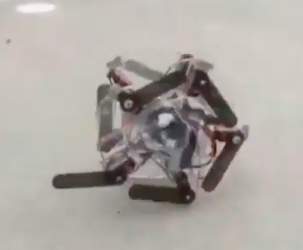

Rollyboi v2

Rollyboi v2 is a robot built for competition in the 2019 Mobots Slalom extraordinaire. He was the only one that wasn't a car attached to a camera, and did just as well (if not better) than most other robots competing.
Rollyboi v1 had no sensors, but v2 had the addition of pressure sensors spaced along the rim of its wheels in order to detect which way was down. Since the entire robot rotates, we need to know which arms are in the correct position to push out and propel the robot.
After determining which direction is down, Rollyboi calculates its current velocity (from the interval between the last pressure point and the current one. Using this, and knowing the time it takes to extend an arm, Rollyboi can predict which arm to begin actuating to extend at the proper time to increase its speed down the track.
Rollyboiy was built during a time of hardship. I only had servos, and was not comfortable destroying their internal potentiometer to re-configure them as motors. So we had to make a spinning robot using servos which only extended ~240 degrees Celsius. It acts on the world by extending leg/arm-like pegs to push off the ground and propel itself forward, like a terrible land-jellyfish.